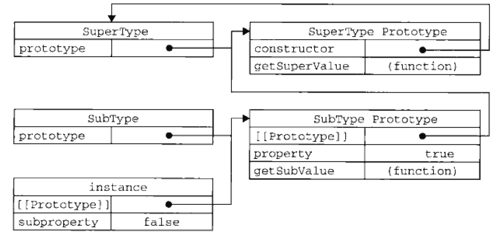

这是接着JS面向对象程序设计（一）的后续（二）
文章一如既往的希望把JS的编程知识讲得通俗易懂，适合初学者学习（虽然本人也是个编程小菜鸟）
为了阅读文章，你需要懂得基本的Javascript语法以及一些函数知识，另外你可能还需要先把（一）看了。
如果没有看的话可以戳这里：人人都能看懂的JS学习笔记——JS面向对象程序设计（一）
【写在阅读之前】
最近在看ECMAScript 6，发现原来ES6已经实现了Class类的定义，也就是说JavaScript的面向对象编程与其他OOP语言一样，再也不畸形了。也许你会想“是否还需要学习这种构造函数与原型链的语法呢？”
这个仁者见仁，如果你追求最新，那现在就可以去阅读ES6的标准啦，如果你觉得ES5的OO编程仍然重要，那请继续耐心往下看。
我个人认为目前大部分原生的对象方法与属性仍然都是ES5标准下的，所以学好ES5标准下的面向对象编程，能够大大帮助你去理解原生JS的属性和方法。
【回顾】
在上一篇文章中，我们讲了JS在ES5标准下，面向对象编程主要运用构造函数以及原型（prototype）实现，目前创建对象最流行的方法是混合模式，即利用构造函数以及原型的各自优点的组合模式。
我们通过构造器创建的实例对象，能够继承构造器里面的初始化属性以及方法，这个是继承特性的一部分，这个很好理解。那么，如果当我们想要新写一个构造器，但是想要继承其他构造器或者已有的对象时，该怎么办呢？
这里我会提及JS面向对象编程的第三个特点：【继承】
什么是继承？
其实就是字面的意思，一个构造器继承了另一个构造器的属性和方法，这里被继承的叫父类、继承的叫子类。想象一下父子关系，其实就很好理解了。
【讲个例子我看看？】
function Father(){
//父亲
this.race = 'asia';
}
Father.prototype.getRace = function(){
return this.race;
}
function Son(){
//儿子
this.race2 = 'europe';
}
Son.prototype = new Father();
Son.prototype.getMyRace = function(){
return this.race2;
}
var intance = new Son();
console.log(instance.getMyRace());//europe
console.log(instance.getRace()); //asia
从上面的例子，可以发现儿子继承了父亲的亚洲人血统，虽然是欧洲人，但是也有亚洲人血统。这是怎么做到的呢？关键点在于Son的prototype上。我们将一个通过Father构造器生成的实例对象传给了Son构造器的原型上，这样其实Son构造器的原型其实指向了Father构造器生成的一个匿名实例对象上，而这个对象拥有属性和方法。
【what?你说的和绕口令一样】
是的，因为这个有一个重要的概念还未提及，叫做“原型链”。什么意思呢？就是实例对象的原型对象中指向的对象又包含着一个原型对象，可以理解原型的链条。
想要理解原型链，需要回顾前一篇中提及的重要知识，即当实例对象的属性和方法被调用时，JS是如何找到它的执行过程。我们再来回顾一下：
1.先将实例对象的__proto__属性指向构造函数的prototype原型属性对象
2.执行构造函数中的实例属性与实例方法。
3.创建了实例对象
4.当你调用实例对象中某个属性或方法时，程序首先会先找到构造函数所生成的实例属性或方法，当没有找到时，会再顺着__proto__指针进入原型对象中进行寻找。
根据JS寻找的过程，刚才父子的例子就可以梳理出一个查找的优先级：
1.实例对象中的实例属性和实例方法（最优先查询）
2.实例对象中的原型对象中的实例属性与实例方法
3.实例对象中的原型对象中的原型对象中的实例属性与实例方法
4.依次无限下去。。。
这样就产生了一个原型链条，我们再通过一张图解来体会一下：
图中，你可以把SuperType看作Father，把SubType看作Son。这里新创建的instance的constructor指向了Father并没有指向Son，其实是因为Son构造器的原型对象被重写了，而这个重写的实例对象是来源于Father的，它包含了一个指向Father的constructor属性。
【谁是最终的爸爸？】
答案是：Object。所有引用类型都会默认继承Object，所以它是最早的祖先。
好了，如果你阅读过上一篇文章，你应该经过感觉到，这个并不是最优的方法。（偷笑）是的，这确定还真不是最合理的方法，问题其实就是出在原型上，因为原型指向一个实例对象，引用传递的负作用就是当你做任何操作时，操作的结果都会映射到所有子类上去。
【借用构造函数】
为了解决原型链的属性与方法共享的负作用，一种叫借用构造函数（constructor stealing）的技术诞生了。这种技术的核心思想就是在子类构造函数内部调用父类构造函数。其借助apply()或call()方法来实现（这里apply与call方法需要大家自己去了解）：
function Father(){
this.colors = ["red","blue","green"];
}
function Son(){
Father.call(this);//继承爸爸！
}
var instance1 = new Son();
instance1.colors.push("black");
console.log(instance1.colors);//"red,blue,green,black"
var instance2 = new Son();
console.log(instance2.colors);//"red,blue,green"
可以发现instance1对于colors引用属性的修改，并没有影响instance2的colors，这么做确实解决了原型链属性与方法共享的弊端。另外，借用构造函数的另一大优势在于能够方便的向构造器传递参数，例如：
function Father(firstname){
this.name = firstname;
this.lastName = 'John';
}
function Son(firstname){
Father.call(this,firstname);//继承爸爸！
}
var father = new Father("Mike");
father.name // Mike
father.lastName // John
var son = new Son("Ben");
son.name //Ben
son.lastName // John
上述例子中，模仿了爷爷给爸爸和孙子都起名字的过程。
【别高兴太早，借用构造函数也是有问题的】
同样，借用构造函数同样存在缺点，如果你阅读上一篇文章就可以很容易回忆起通过构造函数创建实例对象的缺点。是的，就是代码重复执行，严重影响内存空间。上述例子中，爷爷如果要给1万个孙子起名字，就需要调用爸爸1万遍，这个是不合理的。
【于是我们有了合理的模式：组合继承】
组合继承，其实就是将原型链与借用构造函数组合使用，相互弥补各自缺点与各自优点。
function Father(name){
this.name = name;
this.colors = ["red","blue"];
}
Father.prototype.sayName = function(){
console.log(this.name);
}
function Son(name,age){
Father.call(this,name);
this.age = age;
}
//通过原型链来继承方法
Son.prototype = new Father();
Son.prototype.constructor = Son;//这里是新建一个Son原型上的constructor指针
Son.prototype.sayAge = function(){
console.log(this.age);
}
var son1 = new Son("Mike",29);
son1.colors.push("green");
console.log(son1.colors)//"red,blue,green"
var son2 = mew Son("Ben",18);
console.log(son2.colors)//"red,blue"
son1.sayName()//Mike
son2.sayName()//Ben
通过组合的方法，即可以保证修改实例对象的属性时不会映射到其他的实例对象，同时又继承了共享的方法。
【继承一个构造器如此复杂，还不如创建一个新的呢】
如果你觉得组合继承的方式对于你的需求相对复杂，笨重。克罗克福德推出一种原型式继承：
function object(o){
function F(){}
F.prototype = o;
return new F;
}
var person = {
name:"Mike",
friends:["Ben","Johnson"]
}
var instance1 = object(person);
console.log(instance1.name)//Mike
instance1.name = "Seaver";
console.log(instance1.name)//Seaver
var instance2 = object(person);
instance2.friends.push("Ninna");
console.log(instance1.friends)//"Ben,Johnson,Ninna"
console.log(instance2.friends)//"Ben,Johnson,Ninna"
这是一种在函数中先建立一个构造器副本，然后将传入的对象参数赋于构造器副本的原型上，并返回副本的实例对象的思路。其与原型链的区别在于通过建立一个副本，重写了新实例对象的原型。是一种较为轻便的继承思路。
在ES5中新增了Object.create()方法，其原理和原型式继承一致，你能够向Object.create()方法中传递两个对象作为参数，第一个参数是作为新实例对象的原型的对象，第二个（可选）是你想要新对象额外定义的属性的对象。
//作为参数传递的对象person
var person = {
name:"Mike",
friends:["Ben","Johnson"]
}
var anotherperson = Object.create(person,{
name:{
value:"Greg"
}
});
console.log(anotherperson.name);//"Greg"
console.log(anotherperson.friends);//"Ben,Johnson"
并不是所有的浏览器版本支持Object.create()方法，详细的需要查一下。
所以，如果你只想让一个对象与另一个对象保持类似的情况下，完全没有必要兴师动众创建构造函数，原型式继承就已经完全可以胜任了。
【总结】
好了，到这里为止对于JS面向对象编程的基础知识都以及讲完了。总结一下理解JS面向对象编程的关键知识点：
1.JS面向对象编程的特点：封装、多态、继承
2.构造函数与实例对象
3.原型与原型链
4.值传递与引用传递
5.构造函数的执行过程
6.实例对象上属性与方法的调用查询顺序
7.额外知识：作用域与this指针
其实还有很多JS面向对象编程的知识点没有仔细讲，比如“寄生”，这些第一是我自己也没有非常理解与掌握所以也就不误导大家了，第二是自己去学习一遍才能真正掌握。
就这样吧，谢谢你的耐心阅读。
2016年9月25日